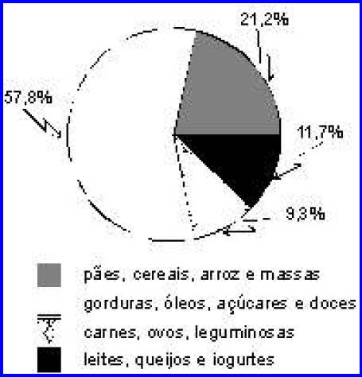

Em estudo realizado com o objetivo de analisar a quantidade e a qualidade de
produtos alimentícios veiculados por três redes de canal aberto da televisão
brasileira, observou-se que, dos 5.338 anúncios transmitidos no período de
acompanhamento, 1.395 (26%) eram anúncios de produtos alimentícios. A
figura ao lado mostra o percentual desses 1.395 anúncios correspondente a
cada grupo de alimentos.
S. S. Almeida et al. Revista de Saúde Pública, 2002, 36(3):353-5 (com adaptações).

Tendo as informações apresentadas no texto acima e no gráfico ao lado apenas
como referência inicial e considerando os fatores determinantes para a formação de
hábitos alimentares, julgue os itens a seguir.
-
Existe correlação entre exposição à propaganda de alimentos veiculada na mídia
televisiva e formação de hábitos alimentares.
-
Os resultados do estudo representam uma pirâmide alimentar invertida com
relação à sua base, fenômeno típico de transição nutricional.
-
No Brasil, a inexistência de regulamentação de estratégias de propaganda e marketing de alimentos prejudica a
promoção de hábitos alimentares saudáveis.
-
Raízes, tubérculos e legumes pertencem ao mesmo grupo alimentar que responde, de acordo com a pesquisa, por
21,2% dos anúncios de produtos alimentícios transmitidos pelas três redes de canal aberto de televisão estudadas.
-
O fenômeno da globalização bem como a variedade e a disponibilidade de produtos alimentícios são fatores que
influenciam a formação do padrão alimentar contemporâneo.
Estão certos apenas os itens
-
I, II e III.
-
I, II e V.
-
I, III e IV.
-
II, IV e V.
-
III, IV e V.